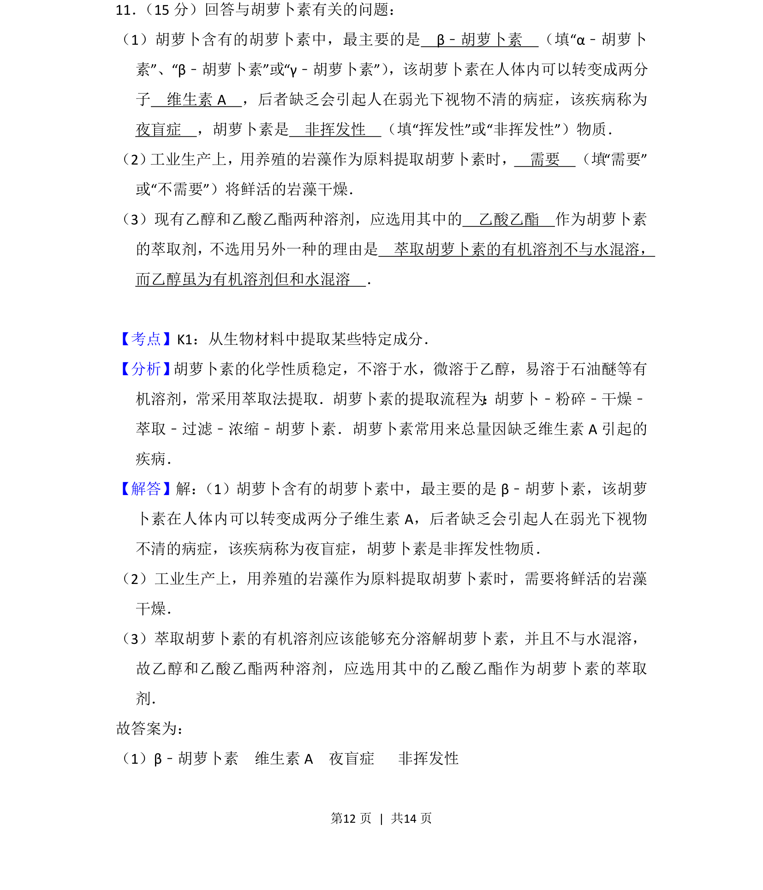
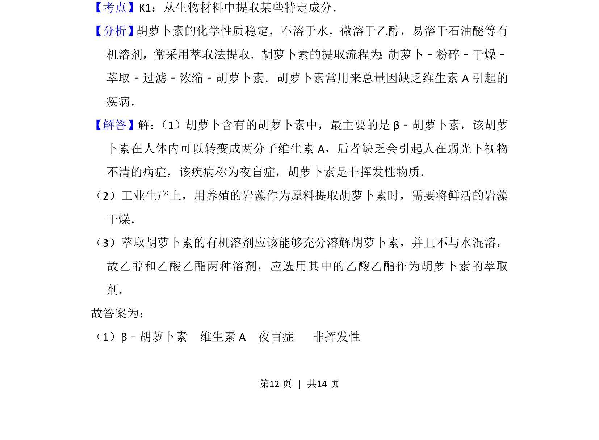
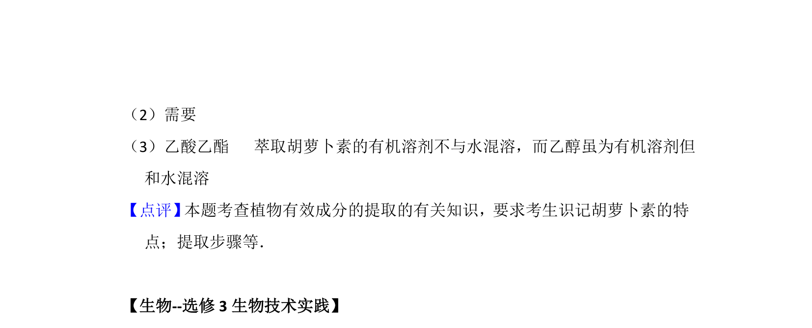

考点：β-胡萝卜素 维生素A 萃取法 水溶性

本题考查胡萝卜素的种类、性质及萃取提取的相关知识。


📄 原 PDF 第 12 页：
素材/真题/吉林/2008-2024·（吉林）生物高考真题/2015年高考生物试卷（新课标Ⅱ）（解析卷）.pdf
11． （15分）回答与胡萝卜素有关的问题： （1）胡萝卜含有的胡萝卜素中，最主要的是 β﹣胡萝卜素 （填“α﹣胡萝卜 素”、“β﹣胡萝卜素”或“γ﹣胡萝卜素”） ，该胡萝卜素在人体内可以转变成两分 子 维生素A ，后者缺乏会引起人在弱光下视物不清的病症，该疾病称为 夜盲症 ，胡萝卜素是 非挥发性 （填“挥发性”或“非挥发性”）物质． （2） 工业生产上，用养殖的岩藻作为原料提取胡萝卜素时， 需要 （填“需要” 或“不需要”）将鲜活的岩藻干燥． （3）现有乙醇和乙酸乙酯两种溶剂，应选用其中的 乙酸乙酯 作为胡萝卜素 的萃取剂，不选用另外一种的理由是 萃取胡萝卜素的有机溶剂不与水混溶， 而乙醇虽为有机溶剂但和水混溶 ．
【考点】K1：从生物材料中提取某些特定成分．菁优网版权所有 【分析】 胡萝卜素的化学性质稳定，不溶于水，微溶于乙醇，易溶于石油醚等有 机溶剂，常采用萃取法提取．胡萝卜素的提取流程为 ： 胡萝卜﹣粉碎﹣干燥﹣ 萃取﹣过滤﹣浓缩﹣胡萝卜素．胡萝卜素常用来总量因缺乏维生素A引起的 疾病． 【解答】解： （1）胡萝卜含有的胡萝卜素中，最主要的是β﹣胡萝卜素，该胡萝 卜素在人体内可以转变成两分子维生素A，后者缺乏会引起人在弱光下视物 不清的病症，该疾病称为夜盲症，胡萝卜素是非挥发性物质． （2）工业生产上，用养殖的岩藻作为原料提取胡萝卜素时，需要将鲜活的岩藻 干燥． （3）萃取胡萝卜素的有机溶剂应该能够充分溶解胡萝卜素，并且不与水混溶， 故乙醇和乙酸乙酯两种溶剂，应选用其中的乙酸乙酯作为胡萝卜素的萃取 剂． 故答案为： （1）β﹣胡萝卜素 维生素A 夜盲症 非挥发性